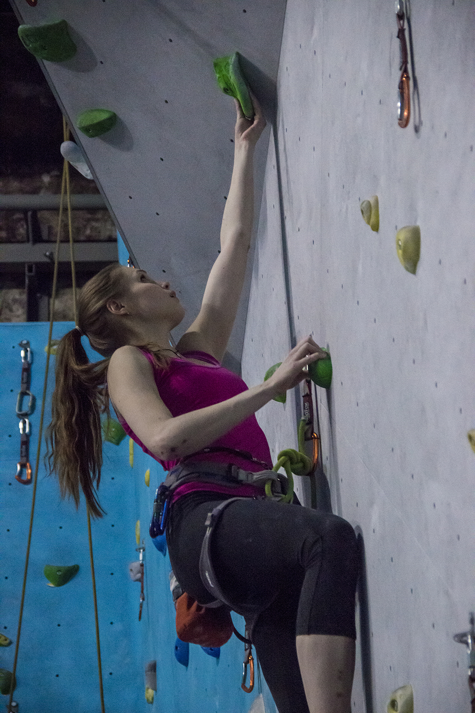

Скалолазание |
|---|
Почему скалолазание лучший вид спорта?Скалолазание - вид спорта, в котором ты можешь найти всё, чего только может не хватать человеку в жизни: спорта, адреналина, новых замечательных друзей, море новых эмоций, научиться преодалевать себя, свои страхи, расширять границы своих возможностей! Скалолазание как фитнесЕсли ты хочешь иметь красиво тело, но тебе надоело просто ходить в зал и потеть с железом и на тренажерах, то скалолазание - это то, что тебе нужно. В скалолазании задействуются мышцы всеготело от языка (когда ты с другом обсуждаешь сложный маршрут) до кончика "хвоста" Скалолазание - это опасно и страшно?Любой вид спорта не безопасный, если не соблюдать определенные правила. скалолазание - менее опасный вид спорта, чем его представляют себе большинство людей. Что же касается страха, я считаю, что со страхами нужно бороться. Страхи - наша слабость, а от слабостей нужно избавляться. Занимаясь скалолазанием, вы не только научитесь контролировать своё тело, но и разовьёте в себе такие качества как: уверенность, ловкость, гибкость, стрессоустойчивать, научитесь не опускать руки, не сдаваться и преодалевать препятствия.

gggggggggggg gggggggggggg gggggggggggg gggggggggggg
Какие бывают виды лазания?Главных видов скалолазания всего 3: Боулдеринг, трудность, скорость. С последним всё предельно понятно. Главная цель - как можно быстрее залезть. Скалолазание на трудность представляет из себе лазание длинной сложной трассы, требующей большой выносливости и большого труда. Лазание на трудность подразумевает использование в качестве страховки веревку. Боулдеринг - вид лазания, в котором спортсмену предоставляется возможность на короткой трассе оставить все свои силы. Трассы на боулдеринге всегда очень тяжёлые и требуют от спортсмена максимальной точности, силы, гибкости и ловкости. Всего за пару движений он достигает топа. Болдеринг, пожалуй, самый энергозатратный вид лазания. Обратно на главную страницу |